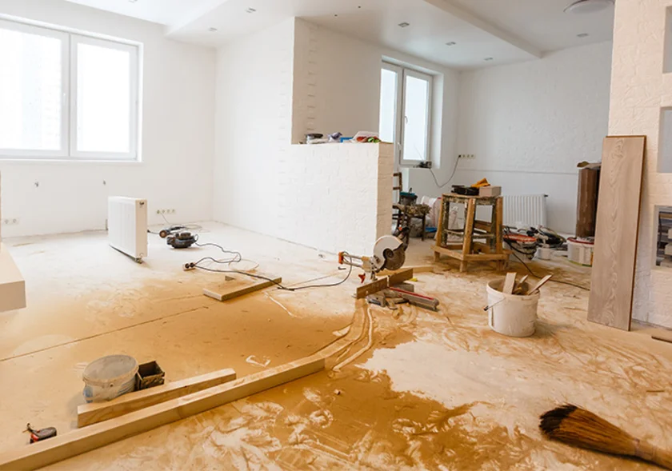
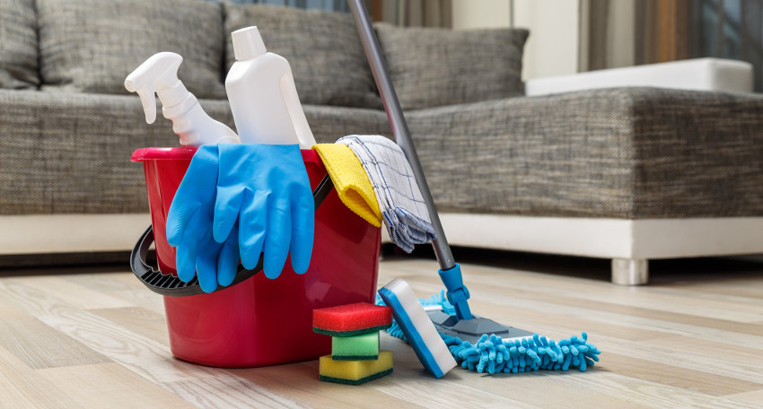
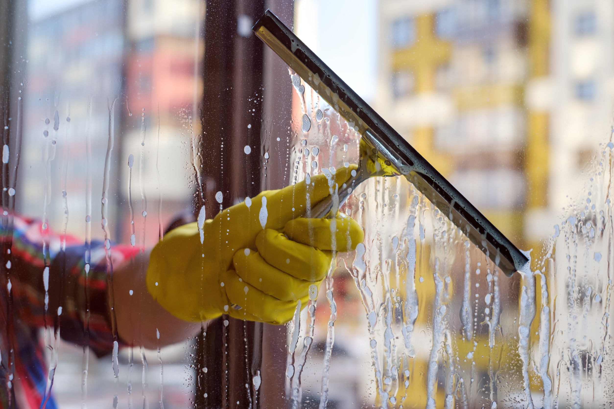
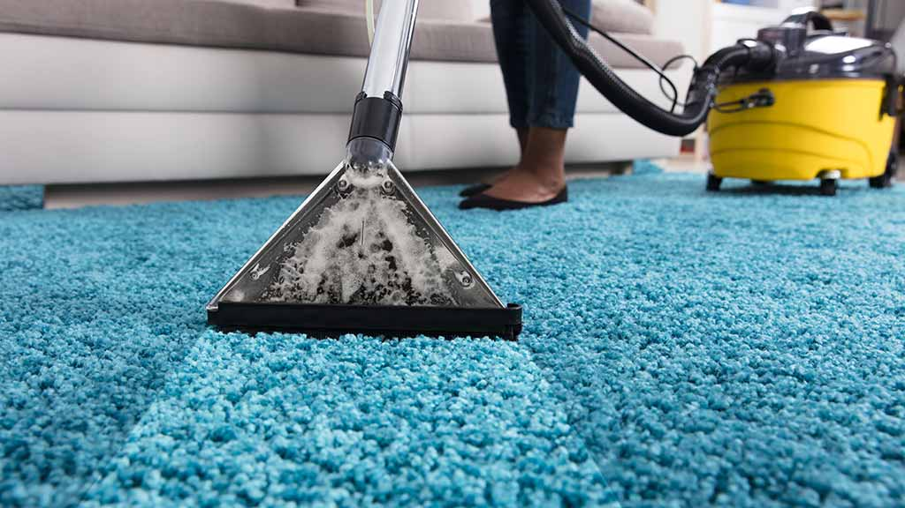
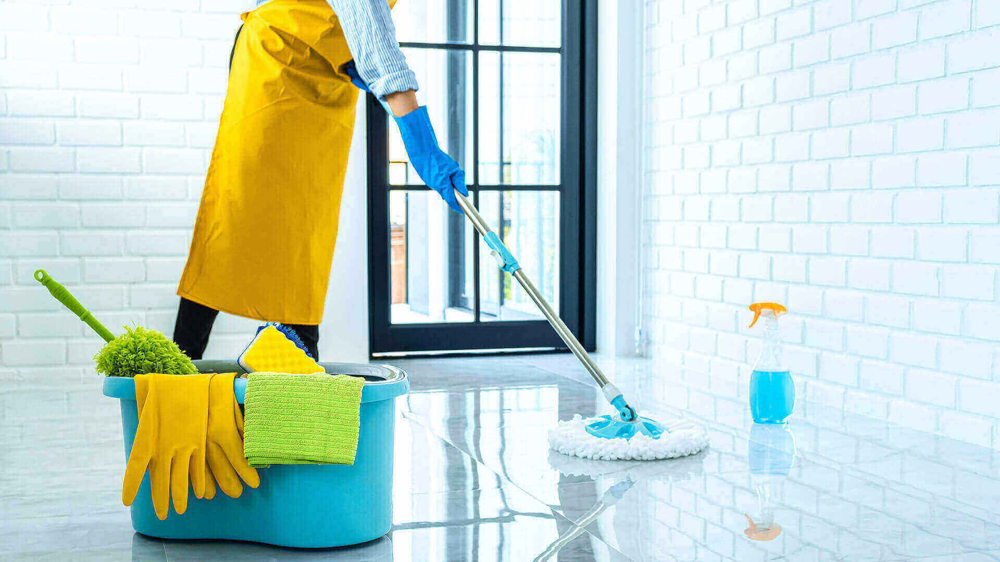
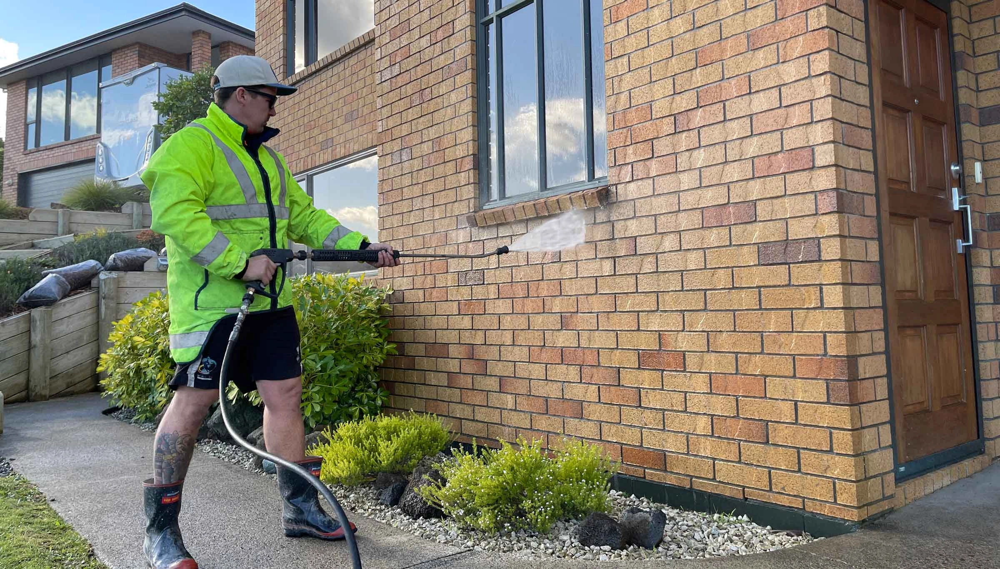
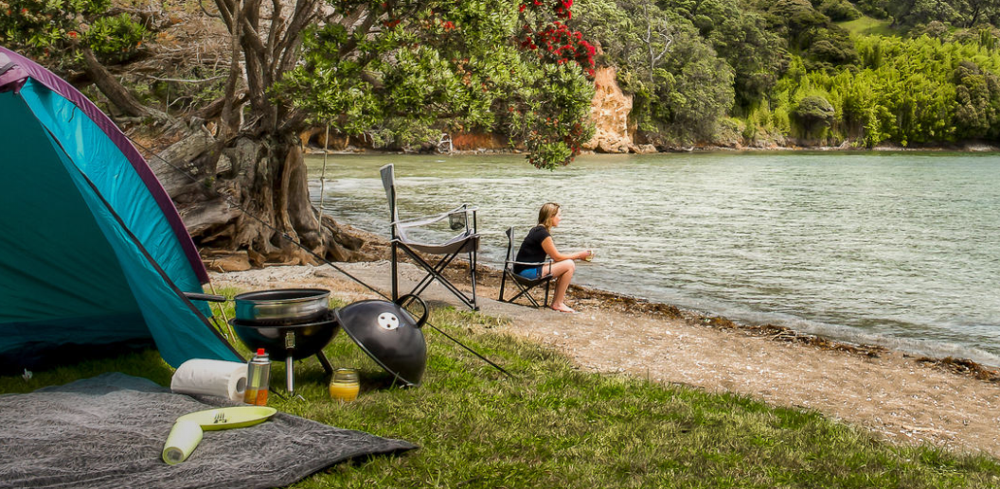
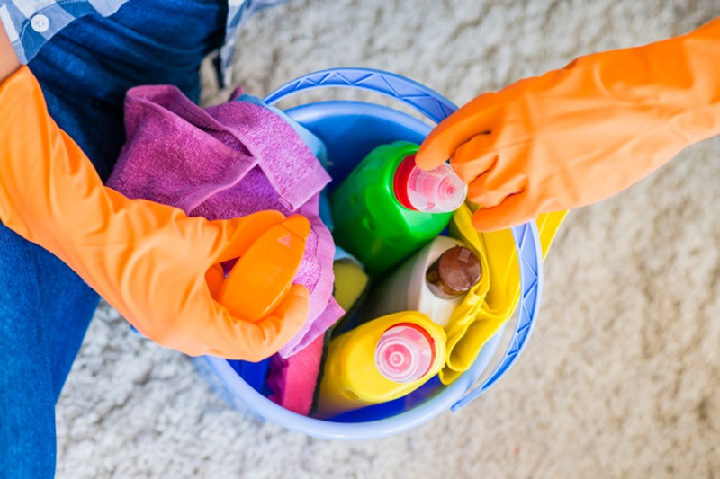

At Ultra Cleaning Southland Ltd, we are committed to maintaining high standards of cleanliness across homes, businesses, and public spaces in New Zealand. With a focus on eco-friendly practices and modern techniques, we ensure every space we touch is not only clean but also healthier and safer for all.

We provide top-notch cleaning services for businesses, ensuring a clean and productive work environment. Whether it's offices, retail stores, or large industrial spaces, our team ensures everything is spotless and ready for business.

Our domestic cleaning services are designed to keep your home spotless and comfortable. We offer regular cleaning schedules or one-off deep cleans to suit your needs. Using eco-friendly products, we ensure your home is not only clean but also safe for your family.

Our professional window cleaning service ensures a streak-free finish and a clear view. Whether it's a small home or a large commercial building, we use advanced techniques to reach even the highest windows safely and effectively.

Keep your carpets looking fresh with our deep carpet cleaning services. Our specialized equipment removes dirt, allergens, and stains, extending the life of your carpets and making your home healthier.

We ensure your residence remains in pristine condition with our comprehensive cleaning services. From regular maintenance to post-renovation clean-ups, we handle all types of residential cleaning tasks.

Our building wash services help maintain the exterior appearance and structural integrity of your property. We remove dirt, mold, and debris from walls, roofs, and gutters to keep your building looking its best.

New Zealand is known for its stunning natural landscapes, clean cities, and pristine beaches. The country's commitment to environmental sustainability extends to cleanliness practices.
In line with New Zealand’s sustainability focus, Ultra Cleaning Southland Ltd uses environmentally friendly cleaning products to minimize environmental impact and promote healthier indoor spaces.

New Zealand’s diverse climate poses unique cleaning challenges, including mold, salt buildup, and dust accumulation. We tailor our services to meet these needs using specialized products and techniques.
At Ultra Cleaning Southland Ltd, we offer not just a service, but an experience. We stay up-to-date with the latest cleaning technologies to ensure the best service for every client.